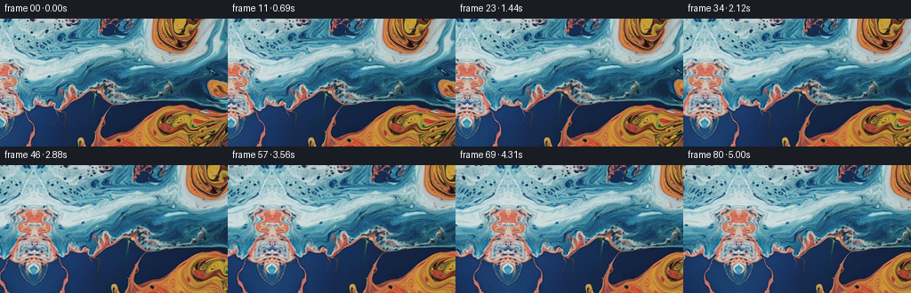
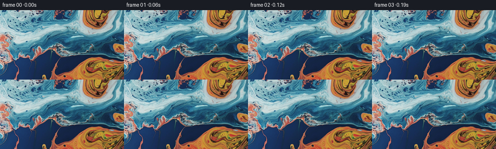
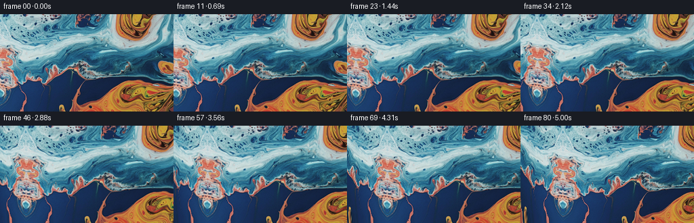

← 本轮 smoke 总览traex/GPT-5.6-Sol · 0001_s2
vision-agent · 256×144 · 16.0 FPS · 81 帧 · 状态 complete · 输出 tokens 7306
原始任务a close up of a blue and orange liquid, camera pans left
当前保存结果
已保存候选与代码修改
这里按时间展示外部捕获的候选，每份均可单独播放。保存新版本不等于完成视觉检查；下方工具证据记录实际看过的图。
候选 01 · 2026-11-08T23:47:18.939058+00:00 · 点开播放与检查图
inspection.png

transition_check.png

代码变化
--- 上一保存版本
+++ 本次保存版本
@@ -0,0 +1,119 @@
+"""Generate the requested leftward camera pan over the supplied liquid image.
+
+The source is treated as a close macro view of a larger liquid-marbling plane. A
+reflective, gently distorted continuation is made outside its left edge so the
+camera can pan left without exposing a flat/empty border. All frame synthesis
+is deterministic and uses only the supplied first frame.
+"""
+
+from pathlib import Path
+
+import cv2
+import numpy as np
+from PIL import Image
+
+import artifact_io
+
+
+CASE_DIR = Path(__file__).resolve().parent
+WIDTH, HEIGHT = 256, 144
+FRAME_COUNT = 81
+
+
+def make_extended_plane(source: np.ndarray, left: int = 104, right: int = 10) -> np.ndarray:
+ """Make a seamless-enough continuation for the newly revealed left area.
+
+ Reflection preserves every color and fine paint filament at the boundary.
+ A distance-dependent coordinate bend removes the rigid look of an ordinary
+ mirror while remaining exactly continuous at the source edge.
+ """
+ h, w = source.shape[:2]
+ ew = left + w + right
+ yy, xx = np.mgrid[0:h, 0:ew].astype(np.float32)
+ world_x = xx - float(left)
+
+ # Identity in the original image and a reflected continuation to its left.
+ sx = world_x.copy()
+ sy = yy.copy()
+ outside = world_x < 0.0
+ distance = np.maximum(-world_x, 0.0)
+ fade = np.clip(distance / 82.0, 0.0, 1.0)
+
+ # Slow bends mimic the broad eddies in the fluid. Every perturbation is
+ # multiplied by fade, hence the shared edge itself remains pixel aligned.
+ reflected_x = distance
+ reflected_x += fade * (
+ 5.0 * np.sin(yy * 0.045 + distance * 0.019)
+ + 2.0 * np.sin(yy * 0.102 - distance * 0.041)
+ )
+ reflected_y = yy + fade * (
+ 5.5 * np.sin(distance * 0.055 + yy * 0.018)
+ + 1.8 * np.sin(distance * 0.020 - yy * 0.075)
+ )
+ sx[outside] = reflected_x[outside]
+ sy[outside] = reflected_y[outside]
+
+ # A little right padding is included only for the subpixel liquid drift.
+ sx[world_x >= w] = (2.0 * (w - 1) - world_x)[world_x >= w]
+ sx = np.clip(sx, 0.0, w - 1.001)
+ sy = np.clip(sy, 0.0, h - 1.001)
+ return cv2.remap(
+ source,
+ sx.astype(np.float32),
+ sy.astype(np.float32),
+ interpolation=cv2.INTER_CUBIC,
+ borderMode=cv2.BORDER_REFLECT_101,
+ )
+
+
+def generate_frames() -> np.ndarray:
+ source = np.asarray(Image.open(CASE_DIR / "first_frame.png").convert("RGB"))
+ if source.shape != (HEIGHT, WIDTH, 3):
+ raise ValueError(f"unexpected first-frame shape: {source.shape}")
+
+ left = 104
+ plane = make_extended_plane(source, left=left)
+ out_y, out_x = np.mgrid[0:HEIGHT, 0:WIDTH].astype(np.float32)
+ frames = np.empty((FRAME_COUNT, HEIGHT, WIDTH, 3), dtype=np.uint8)
+ frames[0] = source # Contract requirement: byte-for-byte identical pixels.
+
+ for i in range(1, FRAME_COUNT):
+ u = i / float(FRAME_COUNT - 1)
+
+ # Near-constant cinematic pan with a short, smooth acceleration and
+ # deceleration. The 62 px travel is clear but leaves familiar source
+ # features in view throughout the shot.
+ eased = u * u * (3.0 - 2.0 * u)
+ distance = 62.0 * eased
+
+ world_x = out_x - distance
+ world_y = out_y
+
+ # Very restrained advection/refraction keeps the liquid from seeming
+ # printed on glass. It is subservient to the coherent camera motion.
+ strength = np.sin(np.pi * u)
+ drift_x = strength * (
+ 0.42 * np.sin(world_y * 0.051 + world_x * 0.010 + 1.7 * u)
+ + 0.18 * np.sin(world_y * 0.123 - world_x * 0.017)
+ )
+ drift_y = strength * (
+ 0.46 * np.sin(world_x * 0.035 - world_y * 0.009 + 1.2 * u)
+ + 0.16 * np.sin(world_x * 0.081 + world_y * 0.027)
+ )
+
+ map_x = world_x + float(left) + drift_x
+ map_y = world_y + drift_y
+ frame = cv2.remap(
+ plane,
+ map_x.astype(np.float32),
+ map_y.astype(np.float32),
+ interpolation=cv2.INTER_CUBIC,
+ borderMode=cv2.BORDER_REFLECT_101,
+ )
+ frames[i] = frame
+
+ return frames
+
+
+if __name__ == "__main__":
+ artifact_io.save(generate_frames(), CASE_DIR)
候选 02 · 2026-11-08T23:48:18.891423+00:00 · 点开播放与检查图
inspection.png

transition_check.png

代码变化
--- 上一保存版本
+++ 本次保存版本
@@ -41,12 +41,15 @@
# Slow bends mimic the broad eddies in the fluid. Every perturbation is
# multiplied by fade, hence the shared edge itself remains pixel aligned.
- reflected_x = distance
+ # Increase the sampling rate progressively away from the join. Combined
+ # with a vertical shear this turns the reflected sliver into genuinely new
+ # swirls, rather than making a conspicuous bilateral "butterfly" pattern.
+ reflected_x = 1.18 * distance + 0.0085 * distance * distance
reflected_x += fade * (
5.0 * np.sin(yy * 0.045 + distance * 0.019)
+ 2.0 * np.sin(yy * 0.102 - distance * 0.041)
)
- reflected_y = yy + fade * (
+ reflected_y = yy + 0.34 * distance + fade * (
5.5 * np.sin(distance * 0.055 + yy * 0.018)
+ 1.8 * np.sin(distance * 0.020 - yy * 0.075)
)
候选 03 · 2026-11-08T23:48:24.060730+00:00 · 点开播放与检查图
inspection.png

transition_check.png
代码变化
代码未变化；重新保存了产物。
可观测工具行为
命令 1 · 2026-11-08T23:45:57.957499+00:00/bin/bash -lc "cat GENERATION_RULES.md && printf '\\n---PROMPT---\\n' && cat prompt.txt"
exit 0 命令 2 · 2026-11-08T23:45:58.226081+00:00/bin/bash -lc "find . -maxdepth 2 -type f -printf '%p\\n' | sort && printf '\\n--- tools ---\\n' && command -v ffmpeg && command -v python3"
exit 1 命令 3 · 2026-11-08T23:46:08.491486+00:00/bin/bash -lc "cat task_spec.json && sed -n '1,240p' artifact_io.py"
exit 0 命令 4 · 2026-11-08T23:46:09.010540+00:00/bin/bash -lc "python3 - <<'PY'
from PIL import Image
im=Image.open('first_frame.png')
print(im.mode, im.size)
PY
command -v ffmpeg || true; command -v python3 || true; python3 - <<'PY'
import numpy, PIL
print('numpy', numpy.__version__, 'PIL',PIL.__version__)
PY"exit 0 命令 5 · 2026-11-08T23:46:27.575694+00:00/bin/bash -lc "python3 - <<'PY'
mods=['cv2','scipy','skimage','imageio']
for m in mods:
try:
x=__import__(m); print(m, getattr(x,'__version__','ok'))
except Exception as e: print(m,'NO',e)
PY"
exit 0 命令 6 · 2026-11-08T23:47:15.208205+00:00/bin/bash -lc "python3 generate.py && python3 - <<'PY'
import numpy as np
from PIL import Image
src=np.array(Image.open('first_frame.png').convert('RGB'))
f0=np.array(Image.open('frames/00.png').convert('RGB'))
print('exact first:',np.array_equal(src,f0),'max diff',np.abs(src.astype(int)-f0.astype(int)).max())
z=np.load('pixels.npz')['pixels']
print('packed shape',z.shape,'dtype',z.dtype,'frames',len(list(__import__('pathlib').Path('frames').glob('*.png'))))
# Report frame differences and directional optical flow on original-region crops.
import cv2
for a,b in [(0,1),(0,20),(20,40),(40,60),(60,80)]:
A=np.array(Image.open(f'frames/{a:02d}.png')); B=np.array(Image.open(f'frames/{b:02d}.png'))
print(a,b,'MAE',np.abs(A.astype(float)-B).mean())
PY"exit 0 命令 7 · 2026-11-08T23:47:33.058623+00:00/bin/bash -lc "python3 - <<'PY'
import cv2, numpy as np
from PIL import Image
im=cv2.imread('first_frame.png')
h,w=im.shape[:2]; L=104
# pad 20 frame, source x L+20, and inpaint left 104, leave outer 20 known via edge avg
for method,name in [(cv2.INPAINT_TELEA,'telea'),(cv2.INPAINT_NS,'ns')]:
c=np.zeros((h+40,w+L+40,3),np.uint8)
c[:]=im[:,0].mean(axis=0).astype(np.uint8)
c[20:20+h,20+L:20+L+w]=im
mask=np.zeros(c.shape[:2],np.uint8); mask[20:20+h,20:20+L]=255
out=cv2.inpaint(c,mask,9,method)
crop=out[20:20+h,20:20+L+w]
cv2.imwrite(f'{name}.png',crop)
PY"exit 0 命令 8 · 2026-11-08T23:48:17.386564+00:00/bin/bash -lc "python3 - <<'PY'
from pathlib import Path
for name in ('telea.png','ns.png'):
p=Path(name)
if p.exists(): p.unlink()
PY
python3 generate.py
python3 - <<'PY'
import numpy as np
from PIL import Image
print('first_exact', np.array_equal(np.array(Image.open('first_frame.png')), np.array(Image.open('frames/00.png'))))
print('shape', np.load('pixels.npz')['pixels'].shape)
PY"exit 0 视觉工具实际返回图片 1

视觉工具实际返回图片 2
视觉工具实际返回图片 3

保存候选 3 份；完成命令 8 次；可验证图片返回 3 张。原始 API 响应与完整日志保留在本地。